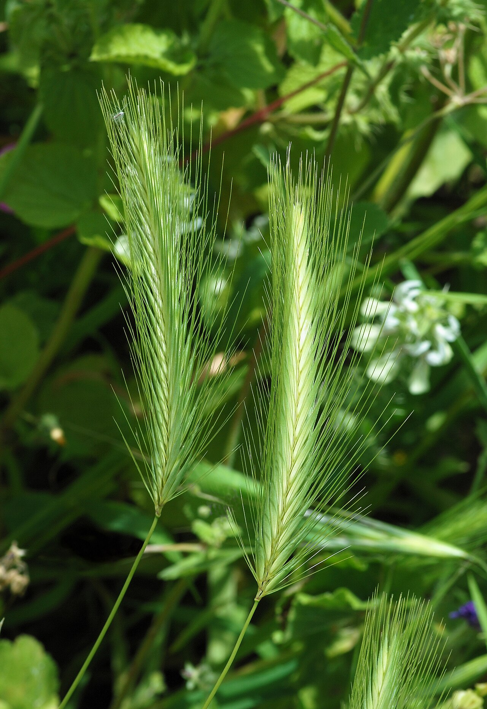

In 20 secondi
- Dopo ogni passeggiata controlla zampe, orecchie e occhi in cerca di forasacchi. Se pensi che uno sia entrato, vai dal veterinario in giornata.
- Se il cane mangia una pianta, allontanalo, fotografa la pianta e chiama il veterinario, anche se il cane sembra stare bene.
- Non farlo vomitare e non dargli cibo o medicine se non te lo dice il veterinario.

Forasacchi: controlla il cane dopo ogni passeggiata
Le spighe secche e uncinate di orzo selvatico, forasacco e graminacee simili si attaccano al pelo e penetrano nel corpo. Non sono velenose, ma continuano ad andare in profondità.
Dove entrano
Tra le dita, orecchie, naso, occhi, genitali.
Segnali
Scuote la testa all’improvviso, starnutisce o perde sangue dal naso, si lecca una zampa, ha un gonfiore tra le dita, socchiude un occhio.
Cosa fare
Vai dal veterinario in giornata: i forasacchi migrano. Non cercare di estrarli da orecchio o naso.
PrevenzioneEvita l’erba secca ai bordi del sentiero. Spazzola il pelo e controlla zampe, orecchie e occhi dopo la passeggiata. In estate tieni corto il pelo tra le dita.
Trova una pianta
Prima le più pericolose. Rischio basso significa che puoi passarci accanto senza problemi, non che si può mangiare.
Caricamento della guida visiva…
Fonti e riferimenti mediciUltima revisione: 5 novembre 2026
Le schede e le fotografie
Questo catalogo informativo di 37 schede non garantisce l'identificazione e non è una flora locale completa: l'aspetto delle piante cambia nel corso della stagione e specie simili possono comportare rischi diversi.
Tutte le foto delle schede sono immagini riutilizzabili di Commons, con autore e licenza indicati dietro il simbolo ©. Il catalogo non è presentato come approvato da un veterinario o da un botanico regionale.
Le informazioni sulle singole piante sono state verificate il 26 agosto 2026. Materiale veterinario consultato: ASPCA Animal Poison Control e indicazioni del Merck Veterinary Manual sulle piante velenose. Lascia le piante selvatiche dove sono e usa le note "da evitare" e "da tenere d'occhio" delle schede per le tue decisioni sul sentiero.
Aggiunti il 5 novembre 2026: forasacchi (Pet Poison Helpline, San Francisco SPCA e VCA Animal Hospitals), veratro bianco e fior di stecco (CliniTox, Vetsuisse dell’Università di Zurigo, e Pet Poison Helpline) e funghi selvatici (Pet Poison Helpline). Ogni scheda riporta la sua fonte.
Queste sono informazioni generali, non una diagnosi né un sostituto delle cure veterinarie.